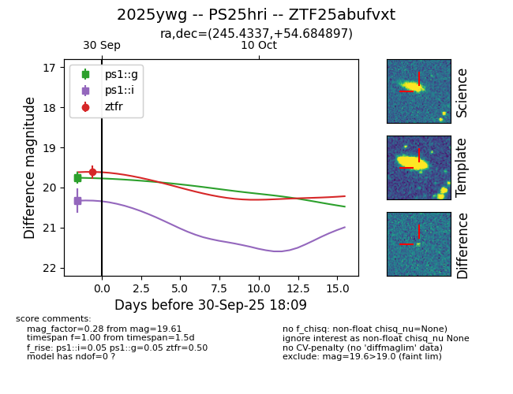
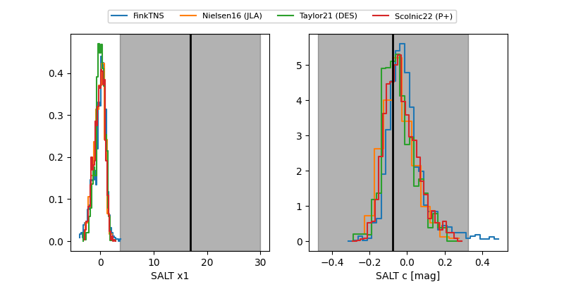

FINK: ZTF25abufvxt
Lasair: ZTF25abufvxt
ALeRCE: ZTF25abufvxt
TNS: 2025ywg
YSE: 2025ywg
2025ywg (yse,tns)
PS25hri (panstarrs)
ZTF25abufvxt (ztf,fink)
equatorial (ra, dec) = (245.4337,+54.68490)
galactic (l, b) = (83.8883,+43.21528)


last ps1::g=19.76, ps1::i=20.34, ztfr=19.61
2 ps1::g, 2 ps1::i, 1 ztfr detections